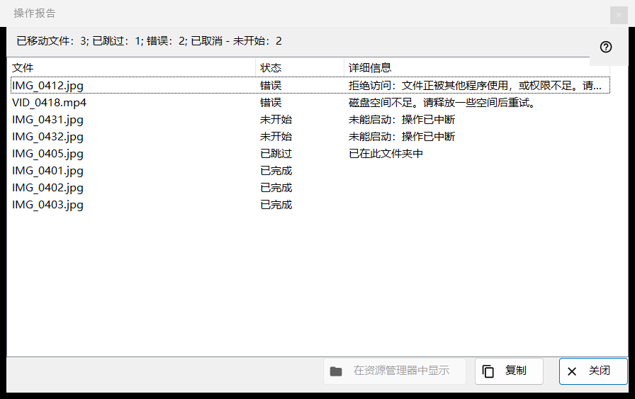
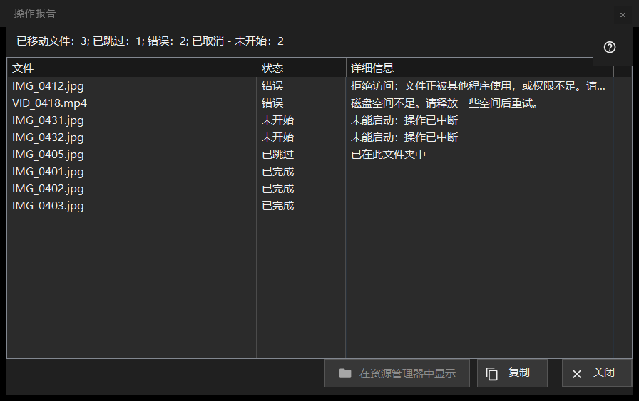

操作报告
用途说明
列出上一次批量操作（移动、复制、删除或撤销）中每个文件的情况，以及任何被跳过或失败的原因。它不会自行打开：运行之后，点击缩略图面板 (F3) 底部的报告行即可。当运行并不顺利时，该行以「单击查看详情」结尾。


操作顺序
- 在缩略图面板中对多个文件执行一项操作。
- 阅读面板底部的汇总行。
- 点击该行以打开此窗口。
- 查看列表顶部：失败的排在最前面。
- 选中若干行，然后用「复制」获取它们的路径，或用「在资源管理器中显示」找到文件。
界面元素
汇总行
该行以结果开头：「已移动文件：5」、「已复制文件：5」、「已删除文件：5」、「已恢复文件：5」或「已完成操作：5」。其余各部分（每部分都带有数量）只在数量不为零时出现：「已跳过」、「错误」、「无法撤销的操作」、「已永久删除，无法恢复」，以及在运行提前停止时出现的「已中断，无法连接到文件夹 - 未开始」（连续三次连接失败就会停止）或「已取消 - 未开始」。
列表
列为：文件、状态和详细信息。最差的行排在最前：先是失败，然后是未开始，再是已跳过，最后是已完成；在同一组内，文件保持运行时的顺序。行的工具提示显示完整路径。详细信息中，失败会给出通俗的原因，已完成的文件会给出目标文件夹，旧名称已被占用时会写出「已另存为」和新名称，而跳过回收站的删除则会写出「已永久删除，无法撤销」。
状态与跳过原因
状态有：「已完成」、「错误」、「已跳过」、「未开始」。被跳过的文件会说明原因：「已在此文件夹中」、「磁盘上已无该文件」、「压缩包内的文件不会被修改」、「所选文件中已存在同名文件」、「资源为只读」、「这是同一个文件」或「目标文件夹中名称已被占用」。未开始的文件会写「未能启动：操作已中断」。
在资源管理器中显示、复制、关闭
选中某一行时，「在资源管理器中显示」才可用；它会打开一个文件夹窗口，并高亮第一个被选中的文件；如果文件已被移走，则打开该文件夹。「复制」（也可用 Ctrl+C）把选中行的完整路径放到剪贴板，每行一个；如果没有选中任何行，则复制所有行的路径：这是传递问题文件清单的快捷办法。「关闭」结束报告。